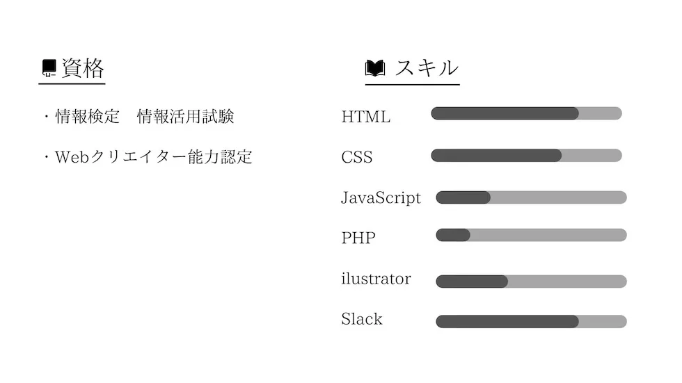
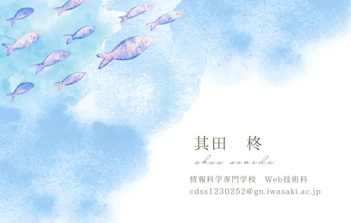
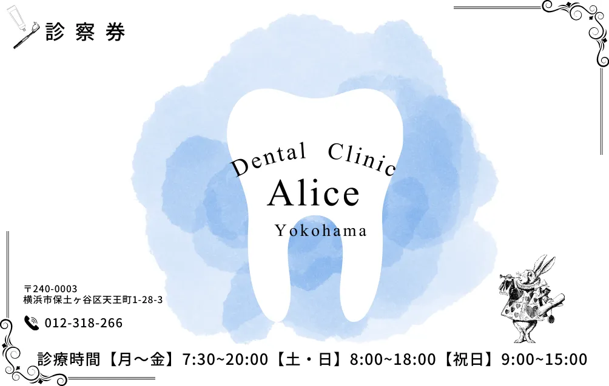
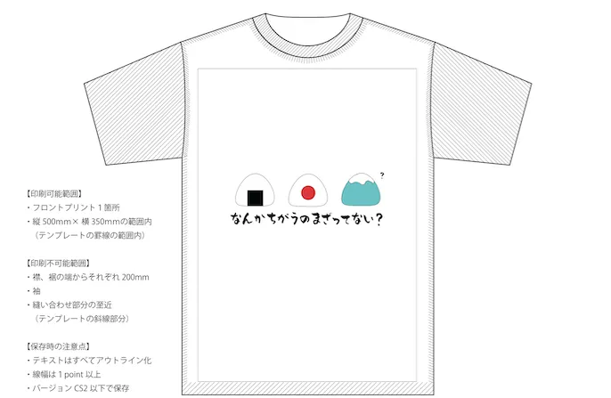
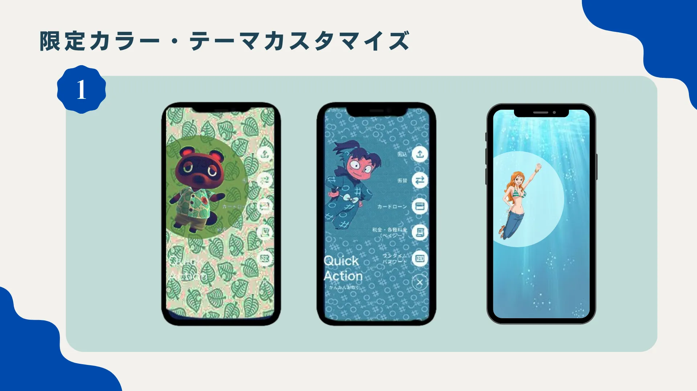
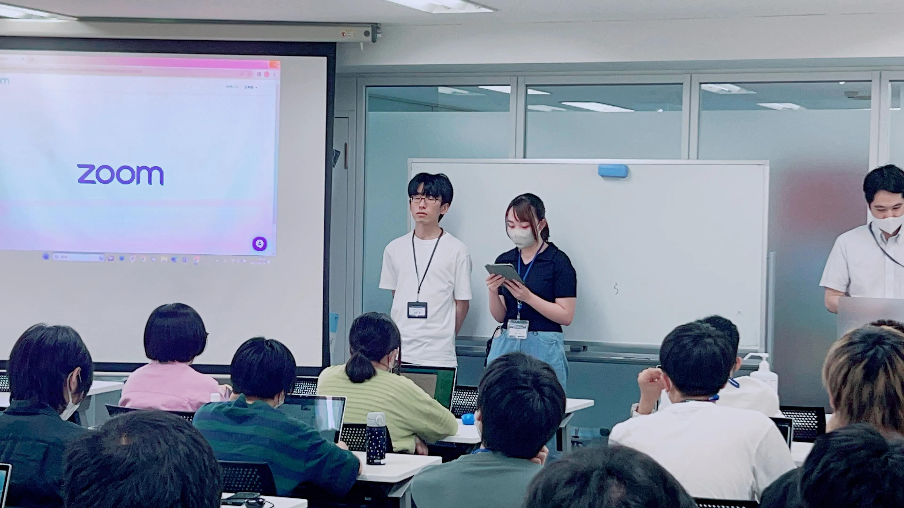
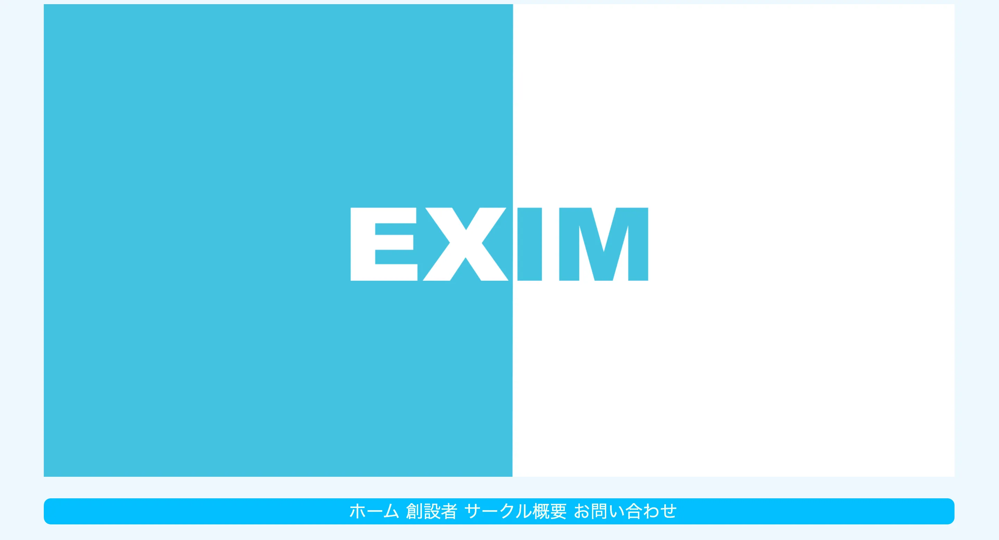

Canvaを使って名刺を作成しました。
情報科学専門学校のイメージカラーである青色を
取り入れることと、そこから自分らしさを出したいと思い
行くことが好きな水族館をイメージして制作しました。

About

其田柊
情報科学専門学校Web技術科
2023年 入学
2025年 卒業見込み
現在、Web制作や動画・画像編集について学んでいる
学校でのサークル活動を通してイベント企画や運営を行っている
お問い合わせ：cdss1230252@gn.iwasaki.ac.jp

Career

名刺デザイン
名刺デザイン

歯医者診察券デザイン
歯医者診察券デザイン
授業で横浜アリス歯科様の診察券デザインを行いました。
「アリス」と「歯」には青のイメージがあったため
青色をベースにウサギやトランプのイラストを用いて
世界観を壊さぬよう、制作をしました。

Tシャツデザイン
Tシャツデザイン
Tシャツデザインの作成を行いました。
「ユニークさ」と「日本」をテーマに制作を行いました。
イラストはIllustratorを用いて１から制作を行い、
フォントはよりユニークさを表現するためインパクトの
強いものを使用しました。

横浜銀行アイディアソン
横浜銀行アイディアソン
横浜銀行様とのアイディアソンを行いました。
横浜銀行様のアプリ利用者増加に向けたキャンペーンに対し、
横浜やお金に関連のあるキャラクターとのコラボを実施すれば
利用者が増加するのではないかと考えました。
スライドに関しては、「イメージのしやすさ」を
第一に作成を行いました。

いろゆる交流会
いろゆる交流会
新入生と学内特待生の交流会イベントの運営をしました。
新入生のクラスに訪問しイベントの告知を行い、当日は
案内や新入生のフォローをしながら私もイベントに参加し
交流を深めました。

サークルホームページ
サークルホームページ
昨年の９月に所属しているサークルのホームページを
作成しました。
「爽やか」というテーマだったため、寒色を多く使うことで
爽やかさを表現しました。
半年前と比べ現在は表現のできる幅が広がりました。